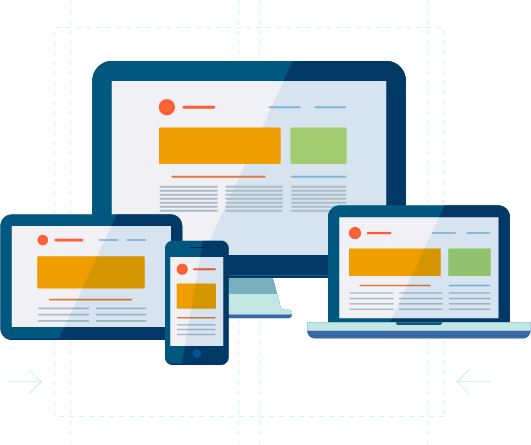

O que é Design Responsivo, e qual a sua importância no desenvolvimento de sites
Conforme a transformação digital vai ocorrendo, mais pessoas acessam a internet por dispositivos móveis e isso é um fenômeno contínuo, que não vai regredir. Por isso, é importante entender o que é ter uma tela responsiva e a sua importância no processo de desenvolvimento de um site.
O que é uma tela responsiva?
O design responsivo é uma técnica que permite que a interface de um site ou aplicativo seja adaptada em qualquer tipo e tamanho de tela, tornando-a responsiva, ou seja, sem distorções ou inacessibilidade no conteúdo em todos os dispositivos. Todo o layout do site oferece a experiência de usuário possível, independentemente do dispositivo onde está sendo exibido, seja em grandes telas, tablets ou celulares. É uma área que necessita de profissionais com habilidades técnicas, pois além do design, a codificação com o HTML e CSS também faz parte desse processo. É adaptar-se ao layout, assim como entender as necessidades do usuário, proporcionando a experiência mais agradável e satisfatória possível.
Por que ter um design responsivo é tão importante?
Entendendo o que é uma tela responsiva, devemos saber que a técnica tem se tornado cada vez mais essencial no cenário atual, onde cada vez mais pessoas utilizam os dispositivos móveis como smartphones e tablets, ao invés de computadores. Ao construir a interface de um site, normalmente se inicia pelo computador, para assim pensar em seus desdobramentos nas demais plataformas. O que é Design Responsivo, e qual a sua importância no desenvolvimento de sites Porém, esse processo está mudando e pensar nos dispositivos móveis inicialmente tem sido uma alternativa para facilitar o trabalho. Um segundo ponto é a experiência do usuário. Se a interface de um site é construída pensando em seu design responsivo, o cliente não terá dificuldades para navegar e interagir em um celular, sem precisar, por exemplo, usar os seus dedos para ampliar ou encolher o site para enxergar um conteúdo. Além disso, esses sites são feitos com elementos leves e fáceis de carregar, possibilitando o uso e a navegação com dados móveis (3G, 4G), que nem sempre oferecem a melhor qualidade de conexão. Ter um design responsivo também ajuda um site a ter melhor posicionamento em mecanismos de busca. O próprio Google já anunciou que as páginas com boa experiência mobile sempre estarão bem ranqueadas, comparadas às que não priorizam diferentes plataformas. Por fim, considerar o design responsivo é também ter um gerenciamento mais facilitado do site, principalmente para os analistas de SEO, pois eles não terão duas páginas diferentes (celular e computador) para analisar os resultados e KPIs de desempenho.
Por que os sites de hoje em dia precisam de um Design Responsivo?
Ter um site responsivo automaticamente irá abrir uma porta para uma maior audiência online. De fato, 70% de todo o tráfego da internet hoje vem de smartphones. Adicionalmente, 51% dos consumidores dizem que usa os seus dispositivos móveis para descobrir novas marcas e produtos. Esse número mostra que otimizar um site amigável para mobile se traduz diretamente na expansão de seu negócio para um nível totalmente novo. Além disso, 89% das pessoas se mostram propensas e recomendar uma determinada marca após uma experiência positiva no seu site para smartphones. Outro fator que é válido de ser mencionado: a Google atualizou o sistema de avaliação de websites para proporcionar melhores resultados de busca para usuários de dispositivos móveis. Em outras palavras, se o site não possuir excelente otimização para mobile, ele pode ser excluído dos resultados de busca do Google para smartphones ou ter menor ranking na Página de Resultados (SERP ou Search Engine Results Pages).
Como fazer um Design Responsivo
Comece pela tela pequena
Ao criar um site, priorize a criação do layout do mobile ao invés de começar pelo desktop. É importante que o conteúdo e a experiência sejam ótimos em ambas as versões, mas começar por telas menores é um caminho mais fácil, ao invés de projetar da maior para a menor.
Converta o site de desktops para uma Versão Mobile
Caso você já tenha um site para computadores de mesa que é totalmente funcional, mas que ainda não está otimizado para uso mobile, a primeira coisa que você precisa fazer é convertê-lo para dispositivos móveis. Por sorte, existem ao menos dois métodos muito bons para fazer isso: converter o seu site usando um serviço online ou através de plugins CMS.
Utilize elementos leves e flexíveis
Inicialmente, é importante escolher um layout que seja leve e adequado para as suas necessidades. Ao escolher as imagens do site, é necessário pensar na flexibilidade. Utilizar fotos pesadas e estáticas pode provocar uma experiência ruim, dependendo do dispositivo utilizado. Nesse contexto, recomendamos o uso de imagens leves e sem definição fixa de largura e altura. Com isso, elas se adaptam a qualquer tipo de tela.
Use um tema que seja responsivo
O design responsivo irá automaticamente fazer com que o seu website seja amigável para dispositivos móveis. Você terá um site que irá exibir conteúdo similar e consistente com a versão desktop. Atualmente, existem serviços de web design profissionais que você pode contratar para o seu site ou muitos temas responsivos para o WordPress que você pode experimentar. Muitos deles não estão disponíveis gratuitamente, mas eles possuem excelente desempenho. Um dos mais rápidos, talvez o mais rápido, temas responsivos do WordPress é o Avada. Esse tema pode carregar o seu site em menos de um segundo, o que é perfeito se você quer fazer um website responsivo.
Faça testes de usabilidade
Realizar testes de usabilidade é essencial para saber se o design responsivo utilizado está sendo eficaz na experiência final do usuário. De acordo com o feedback dos testes, pode-se aplicar melhorias ou alterações nas criações, com o intuito de otimizar os resultados. Para verificar se um tema é responsivo e carrega rapidamente, é recomendado a utilização do Pingdom. O Pingdom é a melhor ferramenta a oferecer dados abrangentes sobre a velocidade de seu website. Tudo o que você precisa fazer é copiar o link da sua página e então colá-lo na coluna de URL. Escolha onde você quer iniciar o teste do seu website e aperte o botão Start Test (Iniciar Teste). Ele irá mostrar a nota do seu site com base no desempenho em geral, o tempo de carregamento e muitos outros elementos importantes. Ele também irá dar alguns apontamentos relacionados a como melhorar a velocidade.
Priorize a velocidade do site
Quando se usa o design responsivo, é imprescindível pensar na diminuição do carregamento e resposta a interações. Um usuário desiste da navegação, quando tem que esperar muito. Para que isso não aconteça, é recomendável usar ferramentas para reduzir o carregamento das páginas internas do site.
Habilite o Accelerated Mobile Pages (AMP)
O Accelerated Mobile Pages (AMP ou Páginas Mobile Aceleradas) é um dos projetos da Google que busca aumentar a velocidade de carregamento dos sites ao usar dados comprimidos para obter páginas mobile com tamanho até 8 vezes menor. Os desenvolvedores da tecnologia alegam que ela é capaz de aumentar a velocidade do seu site em até quatro vezes. Isso também faz com que ele seja mais otimizado para dispositivos móveis. O AMP tem sido amplamente usado por diversas companhias de grande relevância no mundo, como Twitter, The New York Times e Adobe.
Nunca use Flash
Diversos desenvolvedores para web “abandonaram” o Flash porque ele usa muitos recursos de hardware, podendo levar a uma resposta mais lenta da página e maior tempo para carregamento. Adicionalmente, o Flash também pode afetar de maneira negativa a qualidade do seu SEO. Para além disso, nem Android e nem iOS suportam Flash, então esse software em particular é uma péssima escolha se você quiser ter um website amigável para dispositivos móveis.
Preste atenção na aparência do seu site
Os primeiros 15 segundos são momentos decisivos para os usuários decidirem se querem ficar no seu website ou deixá-lo. Portanto, você precisa deixar uma boa impressão o mais rápido possível para passar uma imagem positiva do seu site. Enquanto o conteúdo é o que atrai mais visitantes, a aparência do seu site é o que fará eles ficarem por mais de 15 segundos. Garanta que você desligou o corretor automático do formulário de sua página de login (preencher formulários na internet em dispositivos móveis costuma ser algo problemático), use botões e fontes grandes e refaça o design de seus popups (se você tem algum) para deixá-los mais amigáveis para mobile.
Utilize o Cache do Google AMP para Melhorar a Performance do seu Servidor
O cache do Google AMP é uma rede de entrega de conteúdos (CDN) baseada em proxy que é utilizada para facilitar o processo de transferência de documentos AMP válidos para usuários. Em palavras mais simples, o Google AMP Cache irá manter os dados do seu site armazenados. Esse método permite que sua página carregue mais rapidamente, o que a tornará mais amigável para dispositivos móveis. Esses são os recursos do Google AMP Cache que podem melhorar o desempenho do seu servidor: Ele pode salvar dados de fontes e de imagens. Ele automaticamente limita as dimensões máximas da imagem. Ele irá converter formatos de imagem em opções mais leves para dispositivos móveis. Ele poderá reduzir a qualidade das imagens para acelerar o processo de carregamento. Ele usa canais seguros (HTTPS) e os mais recentes protocolos da internet (SPDY, HTTP/2).
Conclusão
Buscar sucesso online significa que você precisa se adaptar para as mais recentes tendências na tecnologia. Considerando o quão grande é o número de usuários mobile, pode ser inteligente colocar otimização para dispositivos móveis como sua atual prioridade.
Referências:
https://www.digitalhouse.com/br/blog/design-responsivo/ https://www.hostinger.com.br/tutoriais/como-deixar-um-site-responsivo